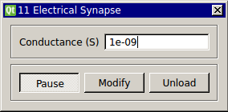

Electric Synapse
Requirements: None
Limitations: None

Creates a simulated connection, or 'synapse,' between two cells. The module takes in voltage signals from two cells and outputs currents based on the voltage difference and user-specified conductance.
Input Channels:
- input(0) - Vm1 : Cellular voltage 1 (V)
- input(1) - Vm2 : Cellular volatage 2 (V)
Output Channels:
- output(0) - Im1 : Current output of G*(Vm2 - Vm1) (A)
- output(1) - Im2 : Current output of G*(Vm1 - Vm2) (A)
Parameters:
- Conductance (S) - conductance across the artificial synapse (S)